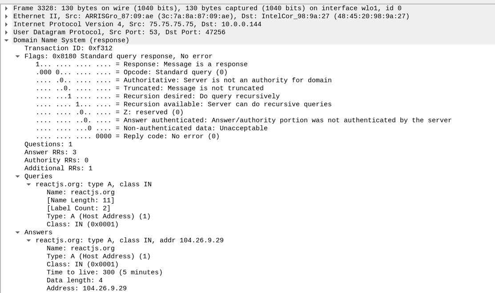
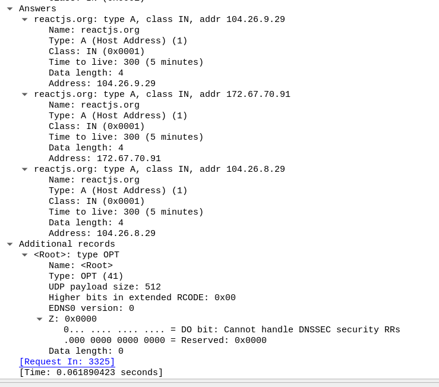

Type A query is for IPV4 ip address.
DNS queries have done on UDP .
Here I am trying to visit reactjs.org in a browser. To get the IP address or TYPE A or IPV4 address, the OS has sent DNS request for both IPV4 & IPV6 ( discussed
in another article ) to the dns nameserver on the network. My home internet netwrok is from xfinity so the dns nameserver is running at 75.75.75.75. In the
below packet if you observe the request in the Internet Protocoal 4 section we can see the src as my ip and dst as 75.75.75.75.
This is the response for the above DNS request. This tells that the ip addresses for reactjs.org are 104.26.9.29 / 104.26.8.29 / 172.67.70.91 .
Response part 1  Response part 2 Why does https://104.26.8.29:443 fail on browser with ERR_SSL_VERSION_OR_CIPHER_MISMATCH, for SSL do we need the hostname ?